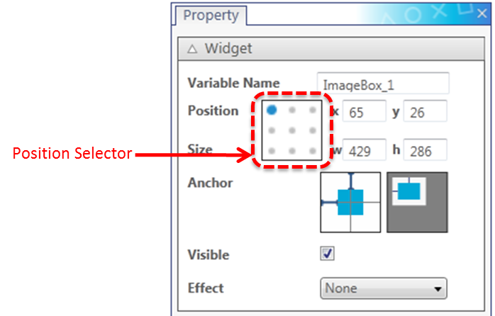
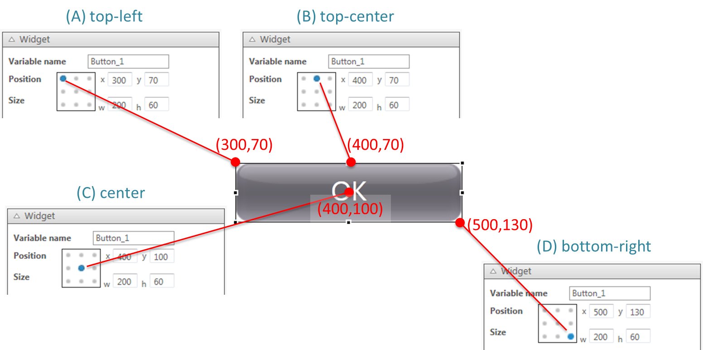
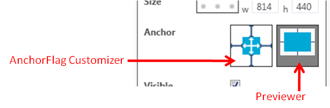
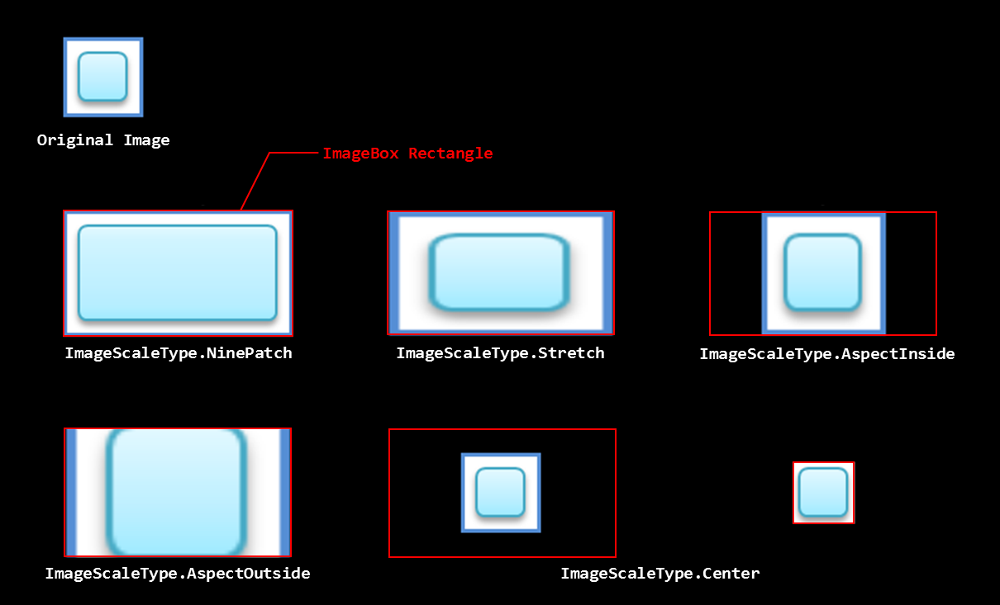
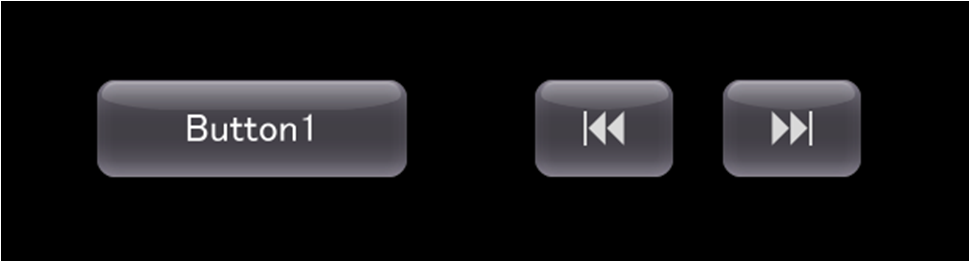
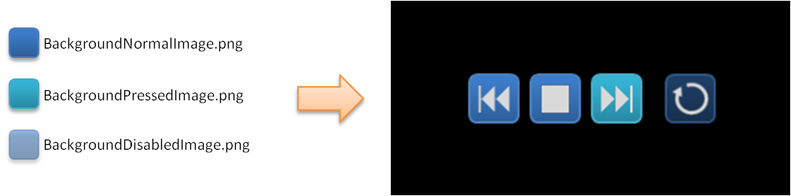
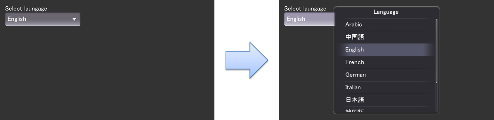

この章では、UI Toolkitで利用可能なウィジェットについて説明します。
各プロパティの詳細については UI Toolkit プログラミングガイド - ウィジェット を参照してください。
内部に他のウィジェットをレイアウト可能なレイアウトのルートとなるウィジェットは、Scene、Panel、Dialog、ListPanelItemの４つです。
ユーザーインターフェースの"画面"を司るウィジェットです。
任意のUI部品を載せることができるコンテナウィジェットです。レイアウトのルートとして使用できるだけでなく、他の汎用ウィジェットなどをグルーピングする用途にも利用可能です。
モーダルなダイアログボックスを表示するためのコンテナウィジェットです。Panel と同様に任意のUI部品を格納することが可能です。
図1 Dialog
ListPanelの各項目に表示する内容をレイアウトするためのウィジェットです。
Widget クラスはすべての ウィジェット (ユーザーインターフェース部品) の基底となる抽象クラスです。このクラスのプロパティは全ての ウィジェット で設定可能です。
図2 Widgetのプロパティ
Variable Name は、ソースコードを出力した際の、対象の Widget のインスタンス名として利用されます。
Widget の Position の欄には、Position Selectorで選択した位置の座標が表示されます。
図3 Position Selector
逆に、Position の欄に数字を入力した場合、その値は、Position Selector で選択した対象に対して適用されます。例えば、Position Selector で中心を選択し(上図(C))、Position の欄に任意の数字を入力することで、対象のウィジェットの中心の座標を直接指定することが可能です。ちなみに、最終的に出力されるソースコードでは、左上隅の座標が自動的に算出され、X、Y プロパティの値として指定されます。
Scene や Panel のサイズが変わった際に、UISystem は AnchorFlag の設定に基づいて Scene や Panel 内部のウィジェットをレイアウトします。AnchorFlag では、上下左右のマージンを固定にするかどうか、幅・高さを自動的にリサイズするかどうかを設定することが可能です。UI Composer を利用すると、AnchorFlag を視覚的に設定することが可能です。
図4 AnchorFlag Customizer
AnchorFlag Customizerは、6つのトグルスイッチ群になっています。ウィジェットの親ウィジェットがリサイズされたときの挙動は、Previewer にアニメーションで表示されます。アニメーションは、マウスカーソルが AnchorFlag Customizer の上にあるときにのみ再生されます。
UI Composer で設定した内容と、出力されるソースコードで指定される AnchorFlag の値の関係は下図のようになります。

図5 アンカー設定とウィジェットのオートリサイズされた結果
Effectは、ウィジェットが画面に登場する際のアニメーションを設定することができます。例えば、ButtonにSlideInEffectを設定した場合には、下記のようなコードが自動生成されます。ただし、レイアウトのルートとして使用したウィジェットの子ウィジェットにのみ有効です。子ウィジェット以外はユーザーコード側で制御してください。
// ... partial class MyScene { Button Button_1; Button Button_2; // ... private void InitializeWidget(LayoutOrientation orientation) { // ... // Scene this.RootWidget.AddChildLast(Button_1); this.RootWidget.AddChildLast(Button_2); this.Showing += new EventHandler(onShowing); this.Shown += new EventHandler(onShown); UpdateLanguage(); } // ... private void onShowing(object sender, EventArgs e) { switch (_currentLayoutOrientation) { case LayoutOrientation.Vertical: { Button_2.Visible = false; } break; default: { Button_2.Visible = false; } break; } } private void onShown(object sender, EventArgs e) { switch (_currentLayoutOrientation) { case LayoutOrientation.Vertical: { new SlideInEffect() { Widget = Button_2, MoveDirection = FourWayDirection.Left, } .Start(); } break; default: { new SlideInEffect() { Widget = Button_2, MoveDirection = FourWayDirection.Left, } .Start(); } break; } } // ...
Label はテキスト表示用の部品です。単一行と、複数行を表示することが可能です。
画像を表示するためのウィジェットです。
画像を表示する際のスケーリング方法を指定できます。
図6 画像のスケーリング方法
タッチ操作に反応するボタンウィジェットです。
ボタンには画像か1行のテキストを表示することが出来ます。
図7 テキストを表示したButtonと、画像を表示したButton
ボタンの背景画像のカスタマイズもUI Composerで可能です。
図8 背景画像をカスタマイズしたButton

図9 Buttonのプロパティウィンドウ
いわゆるチェックボックスやラジオボタン用のウィジェットで、真偽値を保持します。
図10 CheckBox
数値などの調整を行うためのウィジェットです。

図11 Slider
最大値、最小値、初期値、値が変化する際のステップなどを設定することが可能です。
進捗の度合いを表示するウィジェットです。

図12 ProgressBar
テキストの表示と編集ができるウィジェットです。

図13 EditableText
テキスト未入力時のデフォルトテキストの表示、パスワード入力用のマスク表示、オンスクリーンキーボードの入力モードの選択ができます。
何らかの処理が進行中であることを表示するウィジェットです。

図14 BusyIndicator
PopupList は複数の選択肢の中から1つを選ぶために利用する部品です。
図15 PopupList
PopupListに表示する選択肢をUI Composerで設定することが可能です。
日付もしくは時刻を選択するためのウィジェットです。
表示スタイルは2つあり、日付のみ選択できるスタイル、時刻のみ選択できるスタイルの中から選択可能です。それぞれ、DatePicker、TimePicker ウィジェットが生成されます。

図16 Date/TimePicker
任意のUI部品を載せることができるコンテナウィジェットです。
スクロール可能な領域を持つパネルです。子ウィジェットとしてPanelを一つ持っており、その一部分をクリッピングして表示します。タッチ操作で上下や左右方向にスクロールさせることが可能です。スクロール可能な方向を制限することも可能です。

図17 ScrollPanel
ユーザーがレイアウトしたPanelクラスをScrollPanelに追加することが可能です。
ページ単位でスクロールすることのできるパネルです。

図18 PagePanel
ユーザーがレイアウトしたPanelクラスをPagePanelに追加することが可能です。
縦方向のみスクロール可能なリストウィジェットです。各項目に表示する内容は ListPanelItem で指定します。 ユーザーがレイアウトしたListPanelItemを設定することが可能です。
縦方向もしくは横方向にスクロール可能で、格子状に項目が並ぶリストウィジェットです。
Live ウィジェットは、さまざまなインタラクションが実装された PSM 独自のウィジェットです。
タッチした項目に対して、時間差を伴って他の項目がスクロールするリストウィジェットです。
パネル内に配置したウィジェットを画面手前にジャンプさせることのできるパネルウィジェットです。 加速度センサーの値変化やボタンの押下など任意のタイミングで子ウィジェットをジャンプさせることが可能です。
左右のフリックで回転するパネルウィジェットです。表と裏のウィジェットを指定することが可能です。
タッチした点を起点として、ゆがみながらスクロールするパネルウィジェットです。
球体状のウィジェットです。左右にフリックすることで回転できます。またタップに対するイベントハンドラも定義されており、ボタンとしても利用できます。
加速度センサーやパネルの動きに応じて子ウィジェットが揺れるパネルです。